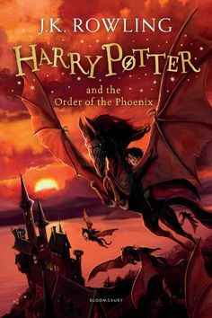
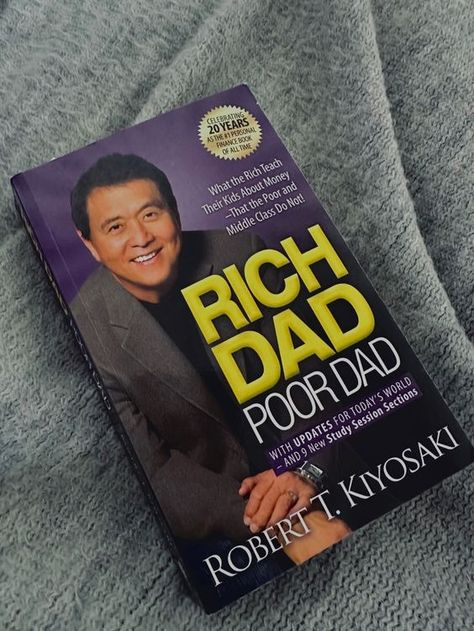
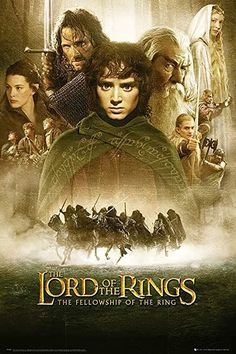
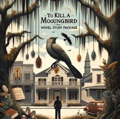
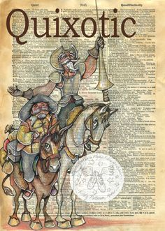

|

|
The book begins with an attack by a number of Dementors against Harry and Dudley on Privet Drive. Harry is
very nearly expelled for his unauthorized use of magic in the Muggle world, but of course, he also has some
great school leaders who come to bat for him. He learns about a secret order of wizards and witches that
exists to fight against evil (the Order of the Phoenix).
|

|
"Rich Dad Poor Dad" is a personal finance book written by Robert Kiyosaki. The book was first published in
1997 and has since become a bestseller, with over 40 million copies sold worldwide. The book is written in a
conversational tone and is aimed at anyone looking to gain financial literacy and independence.
|

|
The first part of the Lord of the Rings trilogy, the Fellowship of the Rings opened the door to a whole new
world for me. I'd never read any of Tolkien's books when I saw the film for the first time at the theatre
and, now that I've read them, in retrospect I think being a neophyte to the mythology made my LOTR movie
experience all the more miraculous.
|
|

|
To Kill a Mockingbird by Harper Lee has a strong sense of morality at the center of its story. The
characters are well-written and slightly unconventional. The hero of the story is Atticus Finch; he
is not a hero in a traditional sense due to his physical traits, but he is a hero because of his
values. I am glad I re-read this book.
|

|
Don Quixote has become so entranced by reading chivalric romances that he determines to become a
knight-errant himself. In the company of his faithful squire, Sancho Panza, his exploits blossom in
all sorts of wonderful ways. While Quixote's fancy often leads him astray—he tilts at windmills,
imagining them to be giants—Sancho acquires cunning and a certain sagacity.
|

|
The Great Gatsby, F. Scott Fitzgerald's third book, stands as the supreme achievement of his career.
This exemplary novel of the Jazz Age has been acclaimed by generations of readers. The story of the
fabulously wealthy Jay Gatsby and his love for the beautiful Daisy Buchanan..
|

|
. A runaway works at a boardinghouse for the damned in late-Georgian–period England. In a prologue,
Louisa informs readers that she works for the Devil among other odd and cursed employees, cleaning
up after the deaths of those who visit Coldthistle House.
|

|
Seventeen, stubborn, and a natural-born witch, Ember feels a strong pull to the Otherworld.
Undeterred by Jack's warnings, she crosses into the forbidden plane with the help of a mysterious
and debonair vampire—and the chase through a dazzling, dangerous world is.
|

|
Dokkôdô is a short, almost poetic list of twenty-one simple rules that he refined over his lifetime.
These rules focus on his belief that an ascetic life could bring peace and fulfillment as well as
offering a path for personal growth and self-mastery.
|

|
It was meant to be a brief sojourn away from criticism, a two-hundred-page break from my reviewer’s eye where I could just take in the story without wondering what–if anything–I needed to say about it.
|

|
Adapted by Joel Horwood and directed by Katy Rudd, The Ocean at the End of the Lane takes audiences on an epic journey to a childhood once forgotten. Returning to his childhood home, a man finds himself standing beside the pond of the old farmhouse where he used to play
|

|
Disrupting Hierarchy in Education is exactly the book educators need for taking on this challenge. It not only embraces a language of critique and possibility but relies on the narratives of teachers who are working together to reclaim schools as sites of struggle and empowerment.
|